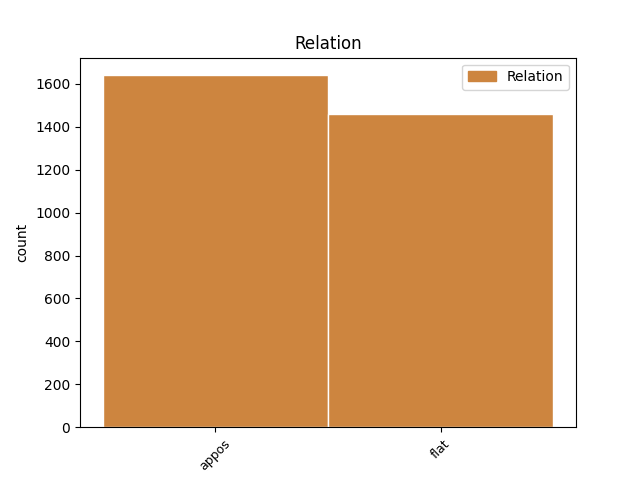
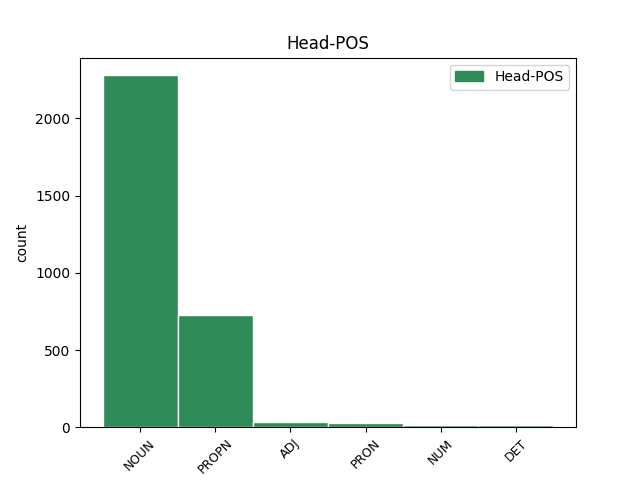
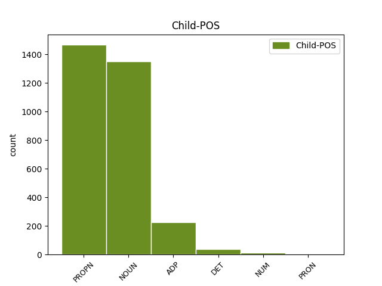

Distribution of features within this leaf



Agreement Rules sorted by frequency.
- When the dependent token is the appositional modifier(appos) of the head token, and the head token is NOUN and the dependent token is NOUN.
1 K _ _ _ _ 0 _ _ _
2 dalšímu _ _ _ _ 0 _ _ _
3 inertnímu _ _ _ _ 0 _ _ _
4 plynu plyn NOUN NNIS3-----A---- Animacy=Inan|Case=Dat|Gender=Masc|Number=Sing|Polarity=Pos 0 _ _ _
5 , _ _ _ _ 0 _ _ _
6 argonu argon NOUN NNIS3-----A---- Animacy=Inan|Case=Dat|Gender=Masc|Number=Sing|Polarity=Pos 4 appos _ SpaceAfter=No
7 , _ _ _ _ 0 _ _ _
8 dojdeme _ _ _ _ 0 _ _ _
9 však _ _ _ _ 0 _ _ _
10 připojením _ _ _ _ 0 _ _ _
11 pouhých _ _ _ _ 0 _ _ _
12 osmi _ _ _ _ 0 _ _ _
13 elektronů _ _ _ _ 0 _ _ _
14 . _ _ _ _ 0 _ _ _
1 V _ _ _ _ 0 _ _ _
2 # _ _ _ _ 0 _ _ _
3 sestavil _ _ _ _ 0 _ _ _
4 ruský _ _ _ _ 0 _ _ _
5 chemik chemik NOUN NNMS1-----A---- Animacy=Anim|Case=Nom|Gender=Masc|Number=Sing|Polarity=Pos 0 _ _ _
6 Mendělejev Mendělejev PROPN NNMS1-----A---- Animacy=Anim|Case=Nom|Gender=Masc|NameType=Sur|Number=Sing|Polarity=Pos 5 flat _ _
7 prvky _ _ _ _ 0 _ _ _
8 do _ _ _ _ 0 _ _ _
9 periodické _ _ _ _ 0 _ _ _
10 soustavy _ _ _ _ 0 _ _ _
11 , _ _ _ _ 0 _ _ _
12 která _ _ _ _ 0 _ _ _
13 je _ _ _ _ 0 _ _ _
14 připojena _ _ _ _ 0 _ _ _
15 . _ _ _ _ 0 _ _ _
1 King King PROPN NNMS1-----A---- Animacy=Anim|Case=Nom|Gender=Masc|NameType=Sur|Number=Sing|Polarity=Pos 0 _ _ _
2 - _ _ _ _ 0 _ _ _
3 Hele Hele PROPN NNMS1-----A---- Animacy=Anim|Case=Nom|Gender=Masc|NameType=Sur|Number=Sing|Polarity=Pos 1 flat _ SpaceAfter=No
4 a _ _ _ _ 0 _ _ _
5 Walkerová _ _ _ _ 0 _ _ _
6 zkoumali _ _ _ _ 0 _ _ _
7 změny _ _ _ _ 0 _ _ _
8 sklonu _ _ _ _ 0 _ _ _
9 dráhy _ _ _ _ 0 _ _ _
10 družice _ _ _ _ 0 _ _ _
11 způsobované _ _ _ _ 0 _ _ _
12 rotující _ _ _ _ 0 _ _ _
13 zemskou _ _ _ _ 0 _ _ _
14 atmosférou _ _ _ _ 0 _ _ _
15 , _ _ _ _ 0 _ _ _
16 jejíž _ _ _ _ 0 _ _ _
17 hustota _ _ _ _ 0 _ _ _
18 se _ _ _ _ 0 _ _ _
19 mění _ _ _ _ 0 _ _ _
20 podle _ _ _ _ 0 _ _ _
21 denní _ _ _ _ 0 _ _ _
22 doby _ _ _ _ 0 _ _ _
23 . _ _ _ _ 0 _ _ _
1 Moseley _ _ _ _ 0 _ _ _
2 zjistil _ _ _ _ 0 _ _ _
3 , _ _ _ _ 0 _ _ _
4 že _ _ _ _ 0 _ _ _
5 série _ _ _ _ 0 _ _ _
6 * _ _ _ _ 0 _ _ _
7 a _ _ _ _ 0 _ _ _
8 * _ _ _ _ 0 _ _ _
9 se _ _ _ _ 0 _ _ _
10 u _ _ _ _ 0 _ _ _
11 různých _ _ _ _ 0 _ _ _
12 prvků _ _ _ _ 0 _ _ _
13 navzájem _ _ _ _ 0 _ _ _
14 podobají _ _ _ _ 0 _ _ _
15 a _ _ _ _ 0 _ _ _
16 s _ _ _ _ 0 _ _ _
17 rostoucím _ _ _ _ 0 _ _ _
18 atomovým _ _ _ _ 0 _ _ _
19 číslem _ _ _ _ 0 _ _ _
20 , _ _ _ _ 0 _ _ _
21 pořadovým _ _ _ _ 0 _ _ _
22 číslem _ _ _ _ 0 _ _ _
23 v _ _ _ _ 0 _ _ _
24 soustavě _ _ _ _ 0 _ _ _
25 prvků _ _ _ _ 0 _ _ _
26 , _ _ _ _ 0 _ _ _
27 se _ _ _ _ 0 _ _ _
28 posouvají _ _ _ _ 0 _ _ _
29 ke _ _ _ _ 0 _ _ _
30 kratším _ _ _ _ 0 _ _ _
31 vlnovým _ _ _ _ 0 _ _ _
32 délkám délka NOUN NNFP3-----A---- Case=Dat|Gender=Fem|Number=Plur|Polarity=Pos 0 _ _ _
33 neboli _ _ _ _ 0 _ _ _
34 k k ADP RR--3---------- AdpType=Prep|Case=Dat 32 appos _ LId=k-1
35 větším _ _ _ _ 0 _ _ _
36 vlnočtům _ _ _ _ 0 _ _ _
37 . _ _ _ _ 0 _ _ _
1 Hauy Hauy PROPN NNMS1-----A---- Animacy=Anim|Case=Nom|Gender=Masc|NameType=Sur|Number=Sing|Polarity=Pos 0 _ _ _
2 , _ _ _ _ 0 _ _ _
3 zakladatel zakladatel NOUN NNMS1-----A---- Animacy=Anim|Case=Nom|Gender=Masc|Number=Sing|Polarity=Pos 1 appos _ _
4 vědecké _ _ _ _ 0 _ _ _
5 krystalografie _ _ _ _ 0 _ _ _
6 , _ _ _ _ 0 _ _ _
7 se _ _ _ _ 0 _ _ _
8 pokusil _ _ _ _ 0 _ _ _
9 vyložit _ _ _ _ 0 _ _ _
10 krystalografické _ _ _ _ 0 _ _ _
11 a _ _ _ _ 0 _ _ _
12 fyzikální _ _ _ _ 0 _ _ _
13 zákonitosti _ _ _ _ 0 _ _ _
14 krystalů _ _ _ _ 0 _ _ _
15 z _ _ _ _ 0 _ _ _
16 jejich _ _ _ _ 0 _ _ _
17 vnitřní _ _ _ _ 0 _ _ _
18 stavby _ _ _ _ 0 _ _ _
19 struktury _ _ _ _ 0 _ _ _
20 . _ _ _ _ 0 _ _ _
1 Čestnými _ _ _ _ 0 _ _ _
2 členy _ _ _ _ 0 _ _ _
3 byli _ _ _ _ 0 _ _ _
4 přední _ _ _ _ 0 _ _ _
5 učenci učenec NOUN NNMP1-----A---- Animacy=Anim|Case=Nom|Gender=Masc|Number=Plur|Polarity=Pos 0 _ _ _
6 té _ _ _ _ 0 _ _ _
7 doby _ _ _ _ 0 _ _ _
8 , _ _ _ _ 0 _ _ _
9 Réaumur Réaumur PROPN NNMS1-----A---- Animacy=Anim|Case=Nom|Gender=Masc|NameType=Sur|Number=Sing|Polarity=Pos 5 appos _ SpaceAfter=No
10 , _ _ _ _ 0 _ _ _
11 Voltaire _ _ _ _ 0 _ _ _
12 , _ _ _ _ 0 _ _ _
13 Linné _ _ _ _ 0 _ _ _
14 a _ _ _ _ 0 _ _ _
15 jiní _ _ _ _ 0 _ _ _
16 . _ _ _ _ 0 _ _ _
1 Tato _ _ _ _ 0 _ _ _
2 unikátní _ _ _ _ 0 _ _ _
3 zahrada _ _ _ _ 0 _ _ _
4 je _ _ _ _ 0 _ _ _
5 výborně _ _ _ _ 0 _ _ _
6 vedena _ _ _ _ 0 _ _ _
7 dnes _ _ _ _ 0 _ _ _
8 vynikajícím _ _ _ _ 0 _ _ _
9 zahradnickým _ _ _ _ 0 _ _ _
10 odborníkem odborník NOUN NNMS7-----A---- Animacy=Anim|Case=Ins|Gender=Masc|Number=Sing|Polarity=Pos 0 _ _ _
11 panem pan NOUN NNMS7-----A---- Animacy=Anim|Case=Ins|Gender=Masc|Number=Sing|Polarity=Pos 10 flat _ LGloss=(oslovení)|LId=pan-1
12 Hodačem _ _ _ _ 0 _ _ _
13 . _ _ _ _ 0 _ _ _
1 To _ _ _ _ 0 _ _ _
2 je _ _ _ _ 0 _ _ _
3 zřejmě _ _ _ _ 0 _ _ _
4 způsobeno _ _ _ _ 0 _ _ _
5 sekundárními _ _ _ _ 0 _ _ _
6 vlivy vliv NOUN NNIP7-----A---- Animacy=Inan|Case=Ins|Gender=Masc|Number=Plur|Polarity=Pos 0 _ _ _
7 , _ _ _ _ 0 _ _ _
8 především _ _ _ _ 0 _ _ _
9 tím ten DET PDZS7---------- Case=Ins|Gender=Masc,Neut|Number=Sing|PronType=Dem 6 appos _ SpaceAfter=No
10 , _ _ _ _ 0 _ _ _
11 že _ _ _ _ 0 _ _ _
12 spektrum _ _ _ _ 0 _ _ _
13 poměrně _ _ _ _ 0 _ _ _
14 brzy _ _ _ _ 0 _ _ _
15 ztrácí _ _ _ _ 0 _ _ _
16 čárový _ _ _ _ 0 _ _ _
17 charakter _ _ _ _ 0 _ _ _
18 a _ _ _ _ 0 _ _ _
19 uplatňují _ _ _ _ 0 _ _ _
20 se _ _ _ _ 0 _ _ _
21 i _ _ _ _ 0 _ _ _
22 sudé _ _ _ _ 0 _ _ _
23 harmonické _ _ _ _ 0 _ _ _
24 . _ _ _ _ 0 _ _ _
1 Lidé _ _ _ _ 0 _ _ _
2 v _ _ _ _ 0 _ _ _
3 mohutném _ _ _ _ 0 _ _ _
4 víru _ _ _ _ 0 _ _ _
5 událostí _ _ _ _ 0 _ _ _
6 , _ _ _ _ 0 _ _ _
7 které _ _ _ _ 0 _ _ _
8 dobrovolně _ _ _ _ 0 _ _ _
9 i _ _ _ _ 0 _ _ _
10 nedobrovolně _ _ _ _ 0 _ _ _
11 spoluvytvářejí _ _ _ _ 0 _ _ _
12 , _ _ _ _ 0 _ _ _
13 hledají _ _ _ _ 0 _ _ _
14 pochopitelně _ _ _ _ 0 _ _ _
15 především _ _ _ _ 0 _ _ _
16 sebe se PRON P6-X4---------- Case=Acc|PronType=Prs|Reflex=Yes 0 _ _ _
17 samé _ _ _ _ 0 _ _ _
18 , _ _ _ _ 0 _ _ _
19 svou _ _ _ _ 0 _ _ _
20 autentičnost autentičnost NOUN NNFS4-----A---- Case=Acc|Gender=Fem|Number=Sing|Polarity=Pos 16 appos _ _
21 a _ _ _ _ 0 _ _ _
22 identitu _ _ _ _ 0 _ _ _
23 , _ _ _ _ 0 _ _ _
24 pátrají _ _ _ _ 0 _ _ _
25 po _ _ _ _ 0 _ _ _
26 nejhlubším _ _ _ _ 0 _ _ _
27 smyslu _ _ _ _ 0 _ _ _
28 své _ _ _ _ 0 _ _ _
29 existence _ _ _ _ 0 _ _ _
30 a _ _ _ _ 0 _ _ _
31 práce _ _ _ _ 0 _ _ _
32 , _ _ _ _ 0 _ _ _
33 po _ _ _ _ 0 _ _ _
34 jistotách _ _ _ _ 0 _ _ _
35 , _ _ _ _ 0 _ _ _
36 které _ _ _ _ 0 _ _ _
37 by _ _ _ _ 0 _ _ _
38 této _ _ _ _ 0 _ _ _
39 existenci _ _ _ _ 0 _ _ _
40 a _ _ _ _ 0 _ _ _
41 práci _ _ _ _ 0 _ _ _
42 daly _ _ _ _ 0 _ _ _
43 uspokojivý _ _ _ _ 0 _ _ _
44 pozitivní _ _ _ _ 0 _ _ _
45 obsah _ _ _ _ 0 _ _ _
46 , _ _ _ _ 0 _ _ _
47 které _ _ _ _ 0 _ _ _
48 by _ _ _ _ 0 _ _ _
49 je _ _ _ _ 0 _ _ _
50 učinily _ _ _ _ 0 _ _ _
51 spokojenými _ _ _ _ 0 _ _ _
52 a _ _ _ _ 0 _ _ _
53 šťastnými _ _ _ _ 0 _ _ _
54 . _ _ _ _ 0 _ _ _
1 V _ _ _ _ 0 _ _ _
2 roce _ _ _ _ 0 _ _ _
3 # _ _ _ _ 0 _ _ _
4 je _ _ _ _ 0 _ _ _
5 na _ _ _ _ 0 _ _ _
6 Matematickofyzikální _ _ _ _ 0 _ _ _
7 fakultě _ _ _ _ 0 _ _ _
8 v _ _ _ _ 0 _ _ _
9 Praze _ _ _ _ 0 _ _ _
10 fyzikální _ _ _ _ 0 _ _ _
11 ústav _ _ _ _ 0 _ _ _
12 s _ _ _ _ 0 _ _ _
13 pěti _ _ _ _ 0 _ _ _
14 odděleními _ _ _ _ 0 _ _ _
15 a _ _ _ _ 0 _ _ _
16 devět _ _ _ _ 0 _ _ _
17 fyzikálních fyzikální ADJ AAFP2----1A---- Case=Gen|Degree=Pos|Gender=Fem|Number=Plur|Polarity=Pos 0 _ _ _
18 kateder _ _ _ _ 0 _ _ _
19 , _ _ _ _ 0 _ _ _
20 elektroniky elektronika NOUN NNFS2-----A---- Case=Gen|Gender=Fem|Number=Sing|Polarity=Pos 17 appos _ _
21 a _ _ _ _ 0 _ _ _
22 vakuové _ _ _ _ 0 _ _ _
23 fyziky _ _ _ _ 0 _ _ _
24 , _ _ _ _ 0 _ _ _
25 fyziky _ _ _ _ 0 _ _ _
26 kovů _ _ _ _ 0 _ _ _
27 , _ _ _ _ 0 _ _ _
28 fyziky _ _ _ _ 0 _ _ _
29 polovodičů _ _ _ _ 0 _ _ _
30 , _ _ _ _ 0 _ _ _
31 fyziky _ _ _ _ 0 _ _ _
32 polymerů _ _ _ _ 0 _ _ _
33 , _ _ _ _ 0 _ _ _
34 chemické _ _ _ _ 0 _ _ _
35 fyziky _ _ _ _ 0 _ _ _
36 , _ _ _ _ 0 _ _ _
37 jaderné _ _ _ _ 0 _ _ _
38 fyziky _ _ _ _ 0 _ _ _
39 , _ _ _ _ 0 _ _ _
40 teoretické _ _ _ _ 0 _ _ _
41 fyziky _ _ _ _ 0 _ _ _
42 , _ _ _ _ 0 _ _ _
43 teoretické _ _ _ _ 0 _ _ _
44 jaderné _ _ _ _ 0 _ _ _
45 fyziky _ _ _ _ 0 _ _ _
46 , _ _ _ _ 0 _ _ _
47 teorie _ _ _ _ 0 _ _ _
48 vyučování _ _ _ _ 0 _ _ _
49 fyzice _ _ _ _ 0 _ _ _
50 , _ _ _ _ 0 _ _ _
51 mikroskopy _ _ _ _ 0 _ _ _
52 . _ _ _ _ 0 _ _ _
1 Existuje _ _ _ _ 0 _ _ _
2 mnoho mnoho DET Ca--1---------- Case=Nom|NumType=Card|PronType=Ind 0 _ _ _
3 dalších _ _ _ _ 0 _ _ _
4 kombinací _ _ _ _ 0 _ _ _
5 , _ _ _ _ 0 _ _ _
6 rámové _ _ _ _ 0 _ _ _
7 obložení obložení NOUN NNNS1-----A---- Case=Nom|Gender=Neut|Number=Sing|Polarity=Pos 2 appos _ LDeriv=obložit|SpaceAfter=No
8 , _ _ _ _ 0 _ _ _
9 při _ _ _ _ 0 _ _ _
10 němž _ _ _ _ 0 _ _ _
11 se _ _ _ _ 0 _ _ _
12 dřevěné _ _ _ _ 0 _ _ _
13 díly _ _ _ _ 0 _ _ _
14 obkládají _ _ _ _ 0 _ _ _
15 do _ _ _ _ 0 _ _ _
16 rámů _ _ _ _ 0 _ _ _
17 . _ _ _ _ 0 _ _ _
1 Po _ _ _ _ 0 _ _ _
2 založení _ _ _ _ 0 _ _ _
3 Československé _ _ _ _ 0 _ _ _
4 akademie _ _ _ _ 0 _ _ _
5 věd _ _ _ _ 0 _ _ _
6 v _ _ _ _ 0 _ _ _
7 byl _ _ _ _ 0 _ _ _
8 ÚÚF _ _ _ _ 0 _ _ _
9 spolu _ _ _ _ 0 _ _ _
10 s _ _ _ _ 0 _ _ _
11 ostatními _ _ _ _ 0 _ _ _
12 ústředními _ _ _ _ 0 _ _ _
13 ústavy _ _ _ _ 0 _ _ _
14 převeden _ _ _ _ 0 _ _ _
15 do _ _ _ _ 0 _ _ _
16 ČSAV _ _ _ _ 0 _ _ _
17 , _ _ _ _ 0 _ _ _
18 v _ _ _ _ 0 _ _ _
19 níž _ _ _ _ 0 _ _ _
20 pak _ _ _ _ 0 _ _ _
21 bylo _ _ _ _ 0 _ _ _
22 postupně _ _ _ _ 0 _ _ _
23 vybudováno _ _ _ _ 0 _ _ _
24 šest šest NUM Cn-S1---------- Case=Nom|Number=Sing|NumForm=Word|NumType=Card 0 _ _ _
25 fyzikálních _ _ _ _ 0 _ _ _
26 pracovišť _ _ _ _ 0 _ _ _
27 ČSAV _ _ _ _ 0 _ _ _
28 , _ _ _ _ 0 _ _ _
29 Ústav ústav NOUN NNIS1-----A---- Animacy=Inan|Case=Nom|Gender=Masc|Number=Sing|Polarity=Pos 24 appos _ _
30 fyziky _ _ _ _ 0 _ _ _
31 pevných _ _ _ _ 0 _ _ _
32 látek _ _ _ _ 0 _ _ _
33 ČSAV _ _ _ _ 0 _ _ _
34 , _ _ _ _ 0 _ _ _
35 Fyzikální _ _ _ _ 0 _ _ _
36 ústav _ _ _ _ 0 _ _ _
37 ČSAV _ _ _ _ 0 _ _ _
38 , _ _ _ _ 0 _ _ _
39 Ústav _ _ _ _ 0 _ _ _
40 fyziky _ _ _ _ 0 _ _ _
41 plazmatu _ _ _ _ 0 _ _ _
42 ČSAV _ _ _ _ 0 _ _ _
43 , _ _ _ _ 0 _ _ _
44 Ústav _ _ _ _ 0 _ _ _
45 jaderné _ _ _ _ 0 _ _ _
46 fyziky _ _ _ _ 0 _ _ _
47 ČSAV _ _ _ _ 0 _ _ _
48 , _ _ _ _ 0 _ _ _
49 Ústav _ _ _ _ 0 _ _ _
50 přístrojové _ _ _ _ 0 _ _ _
51 techniky _ _ _ _ 0 _ _ _
52 ČSAV _ _ _ _ 0 _ _ _
53 , _ _ _ _ 0 _ _ _
54 Laboratoř _ _ _ _ 0 _ _ _
55 radiologické _ _ _ _ 0 _ _ _
56 dozimetrie _ _ _ _ 0 _ _ _
57 ČSAV _ _ _ _ 0 _ _ _
58 , _ _ _ _ 0 _ _ _
59 a _ _ _ _ 0 _ _ _
60 dvě _ _ _ _ 0 _ _ _
61 fyzikální _ _ _ _ 0 _ _ _
62 pracoviště _ _ _ _ 0 _ _ _
63 ve _ _ _ _ 0 _ _ _
64 Slovenské _ _ _ _ 0 _ _ _
65 akademii _ _ _ _ 0 _ _ _
66 věd _ _ _ _ 0 _ _ _
67 , _ _ _ _ 0 _ _ _
68 Fyzikální _ _ _ _ 0 _ _ _
69 ústav _ _ _ _ 0 _ _ _
70 SAV _ _ _ _ 0 _ _ _
71 v _ _ _ _ 0 _ _ _
72 Bratislavě _ _ _ _ 0 _ _ _
73 a _ _ _ _ 0 _ _ _
74 Ústav _ _ _ _ 0 _ _ _
75 experimentálnej _ _ _ _ 0 _ _ _
76 fyziky _ _ _ _ 0 _ _ _
77 SAV _ _ _ _ 0 _ _ _
78 v _ _ _ _ 0 _ _ _
79 Košicích _ _ _ _ 0 _ _ _
80 s _ _ _ _ 0 _ _ _
81 celkovým _ _ _ _ 0 _ _ _
82 počtem _ _ _ _ 0 _ _ _
83 # _ _ _ _ 0 _ _ _
84 pracovníků _ _ _ _ 0 _ _ _
85 zabývající _ _ _ _ 0 _ _ _
86 se _ _ _ _ 0 _ _ _
87 fyzikálním _ _ _ _ 0 _ _ _
88 bádáním _ _ _ _ 0 _ _ _
89 . _ _ _ _ 0 _ _ _
1 V _ _ _ _ 0 _ _ _
2 socialistických _ _ _ _ 0 _ _ _
3 podmínkách _ _ _ _ 0 _ _ _
4 postupně _ _ _ _ 0 _ _ _
5 je _ _ _ _ 0 _ _ _
6 naopak _ _ _ _ 0 _ _ _
7 péče _ _ _ _ 0 _ _ _
8 o _ _ _ _ 0 _ _ _
9 životní _ _ _ _ 0 _ _ _
10 prostředí _ _ _ _ 0 _ _ _
11 nejen _ _ _ _ 0 _ _ _
12 prvořadým _ _ _ _ 0 _ _ _
13 cílem _ _ _ _ 0 _ _ _
14 státní _ _ _ _ 0 _ _ _
15 politiky _ _ _ _ 0 _ _ _
16 , _ _ _ _ 0 _ _ _
17 ale _ _ _ _ 0 _ _ _
18 současně _ _ _ _ 0 _ _ _
19 se _ _ _ _ 0 _ _ _
20 tyto _ _ _ _ 0 _ _ _
21 otázky _ _ _ _ 0 _ _ _
22 stávají _ _ _ _ 0 _ _ _
23 i _ _ _ _ 0 _ _ _
24 výrazem výraz NOUN NNIS7-----A---- Animacy=Inan|Case=Ins|Gender=Masc|Number=Sing|Polarity=Pos 0 _ _ _
25 mezinárodněpolitické _ _ _ _ 0 _ _ _
26 aktivity _ _ _ _ 0 _ _ _
27 a _ _ _ _ 0 _ _ _
28 to _ _ _ _ 0 _ _ _
29 jedním jeden NUM ClZS7---------- Case=Ins|Gender=Masc,Neut|Number=Sing|NumForm=Word|NumType=Card|NumValue=1,2,3 24 appos _ LNumValue=1
30 z _ _ _ _ 0 _ _ _
31 článků _ _ _ _ 0 _ _ _
32 v _ _ _ _ 0 _ _ _
33 boji _ _ _ _ 0 _ _ _
34 za _ _ _ _ 0 _ _ _
35 mírové _ _ _ _ 0 _ _ _
36 soužití _ _ _ _ 0 _ _ _
37 mezi _ _ _ _ 0 _ _ _
38 národy _ _ _ _ 0 _ _ _
39 . _ _ _ _ 0 _ _ _
1 V _ _ _ _ 0 _ _ _
2 roce _ _ _ _ 0 _ _ _
3 # _ _ _ _ 0 _ _ _
4 má _ _ _ _ 0 _ _ _
5 být _ _ _ _ 0 _ _ _
6 uskutečněn _ _ _ _ 0 _ _ _
7 francouzsko _ _ _ _ 0 _ _ _
8 - _ _ _ _ 0 _ _ _
9 sovětský _ _ _ _ 0 _ _ _
10 pokus _ _ _ _ 0 _ _ _
11 v _ _ _ _ 0 _ _ _
12 Indickém _ _ _ _ 0 _ _ _
13 oceánu oceán PROPN NNIS6-----A---1 Animacy=Inan|Case=Loc|Gender=Masc|NameType=Geo|Number=Sing|Polarity=Pos 0 _ _ _
14 , _ _ _ _ 0 _ _ _
15 v v ADP RR--6---------- AdpType=Prep|Case=Loc 13 appos _ LId=v-1
16 Kerguelen _ _ _ _ 0 _ _ _
17 Islands _ _ _ _ 0 _ _ _
18 , _ _ _ _ 0 _ _ _
19 s _ _ _ _ 0 _ _ _
20 dvěma _ _ _ _ 0 _ _ _
21 raketami _ _ _ _ 0 _ _ _
22 . _ _ _ _ 0 _ _ _
1 Tuto _ _ _ _ 0 _ _ _
2 zábavu _ _ _ _ 0 _ _ _
3 spojili _ _ _ _ 0 _ _ _
4 i _ _ _ _ 0 _ _ _
5 s _ _ _ _ 0 _ _ _
6 užitečným užitečný ADJ AANS7----1A---- Case=Ins|Degree=Pos|Gender=Neut|Number=Sing|Polarity=Pos 0 _ _ _
7 , _ _ _ _ 0 _ _ _
8 se s ADP RV--7---------- AdpType=Voc|Case=Ins 6 appos _ LId=s-1
9 sběrem _ _ _ _ 0 _ _ _
10 šípků _ _ _ _ 0 _ _ _
11 a _ _ _ _ 0 _ _ _
12 kaštanů _ _ _ _ 0 _ _ _
13 . _ _ _ _ 0 _ _ _
1 Nesmíme _ _ _ _ 0 _ _ _
2 tedy _ _ _ _ 0 _ _ _
3 být _ _ _ _ 0 _ _ _
4 tak _ _ _ _ 0 _ _ _
5 domýšliví _ _ _ _ 0 _ _ _
6 při _ _ _ _ 0 _ _ _
7 pohledu _ _ _ _ 0 _ _ _
8 na _ _ _ _ 0 _ _ _
9 horskou _ _ _ _ 0 _ _ _
10 loučku _ _ _ _ 0 _ _ _
11 pokrytou _ _ _ _ 0 _ _ _
12 pestrými _ _ _ _ 0 _ _ _
13 a _ _ _ _ 0 _ _ _
14 hýřivými _ _ _ _ 0 _ _ _
15 barvami _ _ _ _ 0 _ _ _
16 rostlin _ _ _ _ 0 _ _ _
17 , _ _ _ _ 0 _ _ _
18 že _ _ _ _ 0 _ _ _
19 to _ _ _ _ 0 _ _ _
20 vše _ _ _ _ 0 _ _ _
21 připravila _ _ _ _ 0 _ _ _
22 příroda _ _ _ _ 0 _ _ _
23 jen _ _ _ _ 0 _ _ _
24 pro _ _ _ _ 0 _ _ _
25 nás já PRON PP-P4--1------- Case=Acc|Number=Plur|Person=1|PronType=Prs 0 _ _ _
26 , _ _ _ _ 0 _ _ _
27 pro pro ADP RR--4---------- AdpType=Prep|Case=Acc 25 appos _ LId=pro-1
28 naše _ _ _ _ 0 _ _ _
29 potěšení _ _ _ _ 0 _ _ _
30 , _ _ _ _ 0 _ _ _
31 ale _ _ _ _ 0 _ _ _
32 musíme _ _ _ _ 0 _ _ _
33 si _ _ _ _ 0 _ _ _
34 uvědomit _ _ _ _ 0 _ _ _
35 , _ _ _ _ 0 _ _ _
36 že _ _ _ _ 0 _ _ _
37 tato _ _ _ _ 0 _ _ _
38 krása _ _ _ _ 0 _ _ _
39 má _ _ _ _ 0 _ _ _
40 svůj _ _ _ _ 0 _ _ _
41 vyšší _ _ _ _ 0 _ _ _
42 cíl _ _ _ _ 0 _ _ _
43 a _ _ _ _ 0 _ _ _
44 smysl _ _ _ _ 0 _ _ _
45 , _ _ _ _ 0 _ _ _
46 že _ _ _ _ 0 _ _ _
47 je _ _ _ _ 0 _ _ _
48 to _ _ _ _ 0 _ _ _
49 vše _ _ _ _ 0 _ _ _
50 částí _ _ _ _ 0 _ _ _
51 velké _ _ _ _ 0 _ _ _
52 životní _ _ _ _ 0 _ _ _
53 cesty _ _ _ _ 0 _ _ _
54 rostlinstva _ _ _ _ 0 _ _ _
55 . _ _ _ _ 0 _ _ _
1 Tímto _ _ _ _ 0 _ _ _
2 domyšlením _ _ _ _ 0 _ _ _
3 je _ _ _ _ 0 _ _ _
4 strukturalismus _ _ _ _ 0 _ _ _
5 , _ _ _ _ 0 _ _ _
6 jehož _ _ _ _ 0 _ _ _
7 jazykovědnou _ _ _ _ 0 _ _ _
8 odnož _ _ _ _ 0 _ _ _
9 propracoval _ _ _ _ 0 _ _ _
10 ženevský _ _ _ _ 0 _ _ _
11 lingvista lingvista NOUN NNMS1-----A---- Animacy=Anim|Case=Nom|Gender=Masc|Number=Sing|Polarity=Pos 0 _ _ _
12 * _ _ _ _ 0 _ _ _
13 de de ADP RR--1---------- AdpType=Prep|Case=Nom|Foreign=Yes 11 flat _ LGloss=(z_franc._de,_zejm._ve_jménech)
14 Saussure _ _ _ _ 0 _ _ _
15 , _ _ _ _ 0 _ _ _
16 posmrtně _ _ _ _ 0 _ _ _
17 vydaný _ _ _ _ 0 _ _ _
18 soubor _ _ _ _ 0 _ _ _
19 jeho _ _ _ _ 0 _ _ _
20 přednášek _ _ _ _ 0 _ _ _
21 vyšel _ _ _ _ 0 _ _ _
22 pod _ _ _ _ 0 _ _ _
23 názvem _ _ _ _ 0 _ _ _
24 Cours _ _ _ _ 0 _ _ _
25 de _ _ _ _ 0 _ _ _
26 linguistique _ _ _ _ 0 _ _ _
27 generale _ _ _ _ 0 _ _ _
28 v _ _ _ _ 0 _ _ _
29 * _ _ _ _ 0 _ _ _
30 # _ _ _ _ 0 _ _ _
31 . _ _ _ _ 0 _ _ _
1 Průběžná _ _ _ _ 0 _ _ _
2 napětí napětí NOUN NNNP1-----A---- Case=Nom|Gender=Neut|Number=Plur|Polarity=Pos 0 _ _ _
3 , _ _ _ _ 0 _ _ _
4 polemiky _ _ _ _ 0 _ _ _
5 či _ _ _ _ 0 _ _ _
6 dokonce _ _ _ _ 0 _ _ _
7 dramaticky _ _ _ _ 0 _ _ _
8 vytvářené _ _ _ _ 0 _ _ _
9 konflikty _ _ _ _ 0 _ _ _
10 těchto _ _ _ _ 0 _ _ _
11 jednotlivých _ _ _ _ 0 _ _ _
12 sfér _ _ _ _ 0 _ _ _
13 , _ _ _ _ 0 _ _ _
14 a _ _ _ _ 0 _ _ _
15 zejména _ _ _ _ 0 _ _ _
16 četná _ _ _ _ 0 _ _ _
17 kulturně _ _ _ _ 0 _ _ _
18 kritická _ _ _ _ 0 _ _ _
19 antimanipulační _ _ _ _ 0 _ _ _
20 , _ _ _ _ 0 _ _ _
21 antiscientistická _ _ _ _ 0 _ _ _
22 či _ _ _ _ 0 _ _ _
23 antitechnokratická _ _ _ _ 0 _ _ _
24 kázání _ _ _ _ 0 _ _ _
25 z _ _ _ _ 0 _ _ _
26 filosofického _ _ _ _ 0 _ _ _
27 piedestalu _ _ _ _ 0 _ _ _
28 , _ _ _ _ 0 _ _ _
29 to _ _ _ _ 0 _ _ _
30 vše všechno PRON PLNS1---------1 Case=Nom|Gender=Neut|Number=Sing|PronType=Tot 2 appos _ _
31 nemůže _ _ _ _ 0 _ _ _
32 zastínit _ _ _ _ 0 _ _ _
33 základní _ _ _ _ 0 _ _ _
34 společný _ _ _ _ 0 _ _ _
35 jmenovatel _ _ _ _ 0 _ _ _
36 a _ _ _ _ 0 _ _ _
37 zejména _ _ _ _ 0 _ _ _
38 společné _ _ _ _ 0 _ _ _
39 hluboké _ _ _ _ 0 _ _ _
40 duchovní _ _ _ _ 0 _ _ _
41 kořeny _ _ _ _ 0 _ _ _
42 celého _ _ _ _ 0 _ _ _
43 buržoazního _ _ _ _ 0 _ _ _
44 ideologického _ _ _ _ 0 _ _ _
45 komplexu _ _ _ _ 0 _ _ _
46 vyrůstajícího _ _ _ _ 0 _ _ _
47 , _ _ _ _ 0 _ _ _
48 často _ _ _ _ 0 _ _ _
49 bez _ _ _ _ 0 _ _ _
50 vědomí _ _ _ _ 0 _ _ _
51 této _ _ _ _ 0 _ _ _
52 souvislosti _ _ _ _ 0 _ _ _
53 , _ _ _ _ 0 _ _ _
54 z _ _ _ _ 0 _ _ _
55 určitého _ _ _ _ 0 _ _ _
56 společného _ _ _ _ 0 _ _ _
57 třídního _ _ _ _ 0 _ _ _
58 a _ _ _ _ 0 _ _ _
59 filosofického _ _ _ _ 0 _ _ _
60 podhoubí _ _ _ _ 0 _ _ _
61 . _ _ _ _ 0 _ _ _
1 Mezi _ _ _ _ 0 _ _ _
2 ohromnými _ _ _ _ 0 _ _ _
3 kotouči _ _ _ _ 0 _ _ _
4 ubíhajících _ _ _ _ 0 _ _ _
5 drátů _ _ _ _ 0 _ _ _
6 jsme _ _ _ _ 0 _ _ _
7 našli _ _ _ _ 0 _ _ _
8 prvního první ADJ CrMS4---------- Animacy=Anim|Case=Acc|Gender=Masc|Number=Sing|NumType=Ord 0 _ _ _
9 z _ _ _ _ 0 _ _ _
10 výpravy _ _ _ _ 0 _ _ _
11 , _ _ _ _ 0 _ _ _
12 Karla Karel PROPN NNMS4-----A---- Animacy=Anim|Case=Acc|Gender=Masc|NameType=Giv|Number=Sing|Polarity=Pos 8 appos _ _
13 Fejfara _ _ _ _ 0 _ _ _
14 . _ _ _ _ 0 _ _ _
1 Trénink _ _ _ _ 0 _ _ _
2 byl _ _ _ _ 0 _ _ _
3 lehký lehký ADJ AAIS1----1A---- Animacy=Inan|Case=Nom|Degree=Pos|Gender=Masc|Number=Sing|Polarity=Pos 0 _ _ _
4 , _ _ _ _ 0 _ _ _
5 takový takový DET PDYS1---------- Case=Nom|Gender=Masc|Number=Sing|PronType=Dem 3 appos _ _
6 na _ _ _ _ 0 _ _ _
7 odpočinek _ _ _ _ 0 _ _ _
8 po _ _ _ _ 0 _ _ _
9 cestě _ _ _ _ 0 _ _ _
10 . _ _ _ _ 0 _ _ _
1 Festival _ _ _ _ 0 _ _ _
2 byl _ _ _ _ 0 _ _ _
3 zahájen _ _ _ _ 0 _ _ _
4 v _ _ _ _ 0 _ _ _
5 neděli _ _ _ _ 0 _ _ _
6 odpoledne _ _ _ _ 0 _ _ _
7 slavnostní _ _ _ _ 0 _ _ _
8 premiérou _ _ _ _ 0 _ _ _
9 Dvořákovy Dvořákův ADJ AUFS2M--------- Case=Gen|Gender=Fem|Gender[psor]=Masc|NameType=Sur|Number=Sing|Poss=Yes 0 _ _ _
10 Svaté _ _ _ _ 0 _ _ _
11 Ludmily Ludmila PROPN NNFS2-----A---- Case=Gen|Gender=Fem|NameType=Giv|Number=Sing|Polarity=Pos 9 flat _ SpaceAfter=No
12 , _ _ _ _ 0 _ _ _
13 kde _ _ _ _ 0 _ _ _
14 účinkovalo _ _ _ _ 0 _ _ _
15 # _ _ _ _ 0 _ _ _
16 pěvců _ _ _ _ 0 _ _ _
17 . _ _ _ _ 0 _ _ _
1 To ten DET PDNS4---------- Case=Acc|Gender=Neut|Number=Sing|PronType=Dem 0 _ _ _
2 , _ _ _ _ 0 _ _ _
3 co _ _ _ _ 0 _ _ _
4 zbyde _ _ _ _ 0 _ _ _
5 , _ _ _ _ 0 _ _ _
6 to ten DET PDNS4---------- Case=Acc|Gender=Neut|Number=Sing|PronType=Dem 1 appos _ _
7 si _ _ _ _ 0 _ _ _
8 vezmu _ _ _ _ 0 _ _ _
9 já _ _ _ _ 0 _ _ _
10 sám _ _ _ _ 0 _ _ _
11 . _ _ _ _ 0 _ _ _
1 Poměrná _ _ _ _ 0 _ _ _
2 část _ _ _ _ 0 _ _ _
3 dovolené _ _ _ _ 0 _ _ _
4 se _ _ _ _ 0 _ _ _
5 mu _ _ _ _ 0 _ _ _
6 určí _ _ _ _ 0 _ _ _
7 podle _ _ _ _ 0 _ _ _
8 celých _ _ _ _ 0 _ _ _
9 kalendářních _ _ _ _ 0 _ _ _
10 měsíců _ _ _ _ 0 _ _ _
11 trvání _ _ _ _ 0 _ _ _
12 pracovního _ _ _ _ 0 _ _ _
13 poměru _ _ _ _ 0 _ _ _
14 , _ _ _ _ 0 _ _ _
15 a _ _ _ _ 0 _ _ _
16 to _ _ _ _ 0 _ _ _
17 tak _ _ _ _ 0 _ _ _
18 , _ _ _ _ 0 _ _ _
19 že _ _ _ _ 0 _ _ _
20 za _ _ _ _ 0 _ _ _
21 každý _ _ _ _ 0 _ _ _
22 celý _ _ _ _ 0 _ _ _
23 kalendářní _ _ _ _ 0 _ _ _
24 měsíc _ _ _ _ 0 _ _ _
25 dostane _ _ _ _ 0 _ _ _
26 jednu _ _ _ _ 0 _ _ _
27 dvanáctinu dvanáctina NUM CyFS4---------- Case=Acc|Gender=Fem|Number=Sing|NumType=Frac 0 _ _ _
28 dovolené _ _ _ _ 0 _ _ _
29 , _ _ _ _ 0 _ _ _
30 dvanáctinu dvanáctina NUM CyFS4---------- Case=Acc|Gender=Fem|Number=Sing|NumType=Frac 27 appos _ LDeriv=dvan`12|LNumValue=12
31 z _ _ _ _ 0 _ _ _
32 celoroční _ _ _ _ 0 _ _ _
33 výměry _ _ _ _ 0 _ _ _
34 dovolené _ _ _ _ 0 _ _ _
35 . _ _ _ _ 0 _ _ _
1 Zněly _ _ _ _ 0 _ _ _
2 zde _ _ _ _ 0 _ _ _
3 písně _ _ _ _ 0 _ _ _
4 Rouselovy _ _ _ _ 0 _ _ _
5 , _ _ _ _ 0 _ _ _
6 Hindemithova _ _ _ _ 0 _ _ _
7 Kanonická _ _ _ _ 0 _ _ _
8 sonáta _ _ _ _ 0 _ _ _
9 , _ _ _ _ 0 _ _ _
10 malý _ _ _ _ 0 _ _ _
11 triptych _ _ _ _ 0 _ _ _
12 * _ _ _ _ 0 _ _ _
13 Máchy _ _ _ _ 0 _ _ _
14 a _ _ _ _ 0 _ _ _
15 skladby _ _ _ _ 0 _ _ _
16 Brňanů Brňan PROPN NNMP2-----A---- Animacy=Anim|Case=Gen|Gender=Masc|NameType=Nat|Number=Plur|Polarity=Pos 0 _ _ _
17 , _ _ _ _ 0 _ _ _
18 * _ _ _ _ 0 _ _ _
19 Matyse Matys PROPN NNMS2-----A---- Animacy=Anim|Case=Gen|Gender=Masc|NameType=Sur|Number=Sing|Polarity=Pos 16 appos _ _
20 s _ _ _ _ 0 _ _ _
21 dobově _ _ _ _ 0 _ _ _
22 přizdobenou _ _ _ _ 0 _ _ _
23 koláží _ _ _ _ 0 _ _ _
24 , _ _ _ _ 0 _ _ _
25 * _ _ _ _ 0 _ _ _
26 Parsche _ _ _ _ 0 _ _ _
27 a _ _ _ _ 0 _ _ _
28 * _ _ _ _ 0 _ _ _
29 Štědroně _ _ _ _ 0 _ _ _
30 . _ _ _ _ 0 _ _ _
1 Hradečtí _ _ _ _ 0 _ _ _
2 loutkáři _ _ _ _ 0 _ _ _
3 se _ _ _ _ 0 _ _ _
4 svému _ _ _ _ 0 _ _ _
5 obecenstvu _ _ _ _ 0 _ _ _
6 představí _ _ _ _ 0 _ _ _
7 v _ _ _ _ 0 _ _ _
8 sobotu _ _ _ _ 0 _ _ _
9 # _ _ _ _ 0 _ _ _
10 listopadu _ _ _ _ 0 _ _ _
11 s _ _ _ _ 0 _ _ _
12 inscenací _ _ _ _ 0 _ _ _
13 hry _ _ _ _ 0 _ _ _
14 Johanes Johanes PROPN NNMS1-----A---- Animacy=Anim|Case=Nom|Gender=Masc|NameType=Giv|Number=Sing|Polarity=Pos 0 _ _ _
15 doktor doktor NOUN NNMS1-----A---- Animacy=Anim|Case=Nom|Gender=Masc|Number=Sing|Polarity=Pos 14 flat _ _
16 Faust _ _ _ _ 0 _ _ _
17 , _ _ _ _ 0 _ _ _
18 kterou _ _ _ _ 0 _ _ _
19 nastudoval _ _ _ _ 0 _ _ _
20 Matěj _ _ _ _ 0 _ _ _
21 Kopecký _ _ _ _ 0 _ _ _
22 . _ _ _ _ 0 _ _ _
1 Ve _ _ _ _ 0 _ _ _
2 vysílání _ _ _ _ 0 _ _ _
3 školního _ _ _ _ 0 _ _ _
4 rozhlasu _ _ _ _ 0 _ _ _
5 promluví _ _ _ _ 0 _ _ _
6 k _ _ _ _ 0 _ _ _
7 žákům _ _ _ _ 0 _ _ _
8 naší _ _ _ _ 0 _ _ _
9 školy _ _ _ _ 0 _ _ _
10 * _ _ _ _ 0 _ _ _
11 Petera Petera PROPN NNMS1-----A---- Animacy=Anim|Case=Nom|Gender=Masc|NameType=Sur|Number=Sing|Polarity=Pos 0 _ _ _
12 , _ _ _ _ 0 _ _ _
13 jeden jeden NUM ClYS1---------- Case=Nom|Gender=Masc|Number=Sing|NumForm=Word|NumType=Card|NumValue=1,2,3 11 appos _ LNumValue=1
14 z _ _ _ _ 0 _ _ _
15 prvních _ _ _ _ 0 _ _ _
16 milicionářů _ _ _ _ 0 _ _ _
17 ve _ _ _ _ 0 _ _ _
18 Dvoře _ _ _ _ 0 _ _ _
19 Králové _ _ _ _ 0 _ _ _
20 . _ _ _ _ 0 _ _ _
1 Škodí _ _ _ _ 0 _ _ _
2 to _ _ _ _ 0 _ _ _
3 pověsti _ _ _ _ 0 _ _ _
4 komunálního _ _ _ _ 0 _ _ _
5 podniku _ _ _ _ 0 _ _ _
6 a _ _ _ _ 0 _ _ _
7 snad _ _ _ _ 0 _ _ _
8 to _ _ _ _ 0 _ _ _
9 on on PRON PPYS1--3------- Case=Nom|Gender=Masc|Number=Sing|Person=3|PronType=Prs 0 _ _ _
10 , _ _ _ _ 0 _ _ _
11 Luboš Luboš PROPN NNMS1-----A---- Animacy=Anim|Case=Nom|Gender=Masc|NameType=Giv|Number=Sing|Polarity=Pos 9 appos _ SpaceAfter=No
12 , _ _ _ _ 0 _ _ _
13 známý _ _ _ _ 0 _ _ _
14 pracant _ _ _ _ 0 _ _ _
15 , _ _ _ _ 0 _ _ _
16 nemá _ _ _ _ 0 _ _ _
17 zapotřebí _ _ _ _ 0 _ _ _
18 , _ _ _ _ 0 _ _ _
19 aby _ _ _ _ 0 _ _ _
20 by _ _ _ _ 0 _ _ _
21 se _ _ _ _ 0 _ _ _
22 kvůli _ _ _ _ 0 _ _ _
23 pár _ _ _ _ 0 _ _ _
24 dolarům _ _ _ _ 0 _ _ _
25 dostával _ _ _ _ 0 _ _ _
26 do _ _ _ _ 0 _ _ _
27 řečí _ _ _ _ 0 _ _ _
28 . _ _ _ _ 0 _ _ _
1 Nenapadne _ _ _ _ 0 _ _ _
2 vás _ _ _ _ 0 _ _ _
3 někdy _ _ _ _ 0 _ _ _
4 , _ _ _ _ 0 _ _ _
5 že _ _ _ _ 0 _ _ _
6 byste _ _ _ _ 0 _ _ _
7 třeba _ _ _ _ 0 _ _ _
8 chtěl _ _ _ _ 0 _ _ _
9 zkusit _ _ _ _ 0 _ _ _
10 taky _ _ _ _ 0 _ _ _
11 něco něco PRON PZ--4---------- Case=Acc|PronType=Ind 0 _ _ _
12 jiného _ _ _ _ 0 _ _ _
13 , _ _ _ _ 0 _ _ _
14 něco něco PRON PZ--4---------- Case=Acc|PronType=Ind 11 appos _ _
15 z _ _ _ _ 0 _ _ _
16 toho _ _ _ _ 0 _ _ _
17 , _ _ _ _ 0 _ _ _
18 co _ _ _ _ 0 _ _ _
19 jste _ _ _ _ 0 _ _ _
20 slyšel _ _ _ _ 0 _ _ _
21 na _ _ _ _ 0 _ _ _
22 svých _ _ _ _ 0 _ _ _
23 cestách _ _ _ _ 0 _ _ _
24 ? _ _ _ _ 0 _ _ _
1 Emerson _ _ _ _ 0 _ _ _
2 Fittipaldi _ _ _ _ 0 _ _ _
3 , _ _ _ _ 0 _ _ _
4 automobilová _ _ _ _ 0 _ _ _
5 hvězda _ _ _ _ 0 _ _ _
6 současnosti _ _ _ _ 0 _ _ _
7 , _ _ _ _ 0 _ _ _
8 má _ _ _ _ 0 _ _ _
9 ve _ _ _ _ 0 _ _ _
10 svém _ _ _ _ 0 _ _ _
11 lotosu _ _ _ _ 0 _ _ _
12 deset deset NUM Cn-S4---------- Case=Acc|Number=Sing|NumForm=Word|NumType=Card 0 _ _ _
13 převodů _ _ _ _ 0 _ _ _
14 , _ _ _ _ 0 _ _ _
15 přesně _ _ _ _ 0 _ _ _
16 tolik tolik DET Ca--4---------- Case=Acc|NumType=Card|PronType=Dem 12 appos _ LId=tolik-1
17 jako _ _ _ _ 0 _ _ _
18 většina _ _ _ _ 0 _ _ _
19 včetně _ _ _ _ 0 _ _ _
20 našich _ _ _ _ 0 _ _ _
21 cyklistů _ _ _ _ 0 _ _ _
22 . _ _ _ _ 0 _ _ _
1 Ale _ _ _ _ 0 _ _ _
2 je _ _ _ _ 0 _ _ _
3 - _ _ _ _ 0 _ _ _
4 li _ _ _ _ 0 _ _ _
5 kořist _ _ _ _ 0 _ _ _
6 , _ _ _ _ 0 _ _ _
7 sežere _ _ _ _ 0 _ _ _
8 neuvěřitelně _ _ _ _ 0 _ _ _
9 mnoho mnoho DET Ca--4---------- Case=Acc|NumType=Card|PronType=Ind 0 _ _ _
10 , _ _ _ _ 0 _ _ _
11 až _ _ _ _ 0 _ _ _
12 pětinu pětina NUM CyFS4---------- Case=Acc|Gender=Fem|Number=Sing|NumType=Frac 9 appos _ _
13 své _ _ _ _ 0 _ _ _
14 vlastní _ _ _ _ 0 _ _ _
15 váhy _ _ _ _ 0 _ _ _
16 . _ _ _ _ 0 _ _ _
1 Nejmenuje _ _ _ _ 0 _ _ _
2 se _ _ _ _ 0 _ _ _
3 kupodivu _ _ _ _ 0 _ _ _
4 Jean _ _ _ _ 0 _ _ _
5 Paul _ _ _ _ 0 _ _ _
6 Belmondo _ _ _ _ 0 _ _ _
7 ani _ _ _ _ 0 _ _ _
8 Louis Louis PROPN NNMS1-----A---- Animacy=Anim|Case=Nom|Gender=Masc|NameType=Geo,Giv|Number=Sing|Polarity=Pos 0 _ _ _
9 de de ADP RR--1---------- AdpType=Prep|Case=Nom|Foreign=Yes 8 flat _ LGloss=(z_franc._de,_zejm._ve_jménech)
10 Funes _ _ _ _ 0 _ _ _
11 , _ _ _ _ 0 _ _ _
12 ale _ _ _ _ 0 _ _ _
13 Jean _ _ _ _ 0 _ _ _
14 Yanne _ _ _ _ 0 _ _ _
15 , _ _ _ _ 0 _ _ _
16 alespoň _ _ _ _ 0 _ _ _
17 máme _ _ _ _ 0 _ _ _
18 - _ _ _ _ 0 _ _ _
19 li _ _ _ _ 0 _ _ _
20 věřit _ _ _ _ 0 _ _ _
21 novináři _ _ _ _ 0 _ _ _
22 Pascalu _ _ _ _ 0 _ _ _
23 Thomasovi _ _ _ _ 0 _ _ _
24 . _ _ _ _ 0 _ _ _
1 Stejně _ _ _ _ 0 _ _ _
2 tak _ _ _ _ 0 _ _ _
3 rozhodující _ _ _ _ 0 _ _ _
4 vliv _ _ _ _ 0 _ _ _
5 na _ _ _ _ 0 _ _ _
6 způsob _ _ _ _ 0 _ _ _
7 života _ _ _ _ 0 _ _ _
8 dělníků _ _ _ _ 0 _ _ _
9 a _ _ _ _ 0 _ _ _
10 jejich _ _ _ _ 0 _ _ _
11 rodin _ _ _ _ 0 _ _ _
12 mělo _ _ _ _ 0 _ _ _
13 každé _ _ _ _ 0 _ _ _
14 hospodářské _ _ _ _ 0 _ _ _
15 , _ _ _ _ 0 _ _ _
16 i _ _ _ _ 0 _ _ _
17 sebenepatrnější _ _ _ _ 0 _ _ _
18 zlepšení _ _ _ _ 0 _ _ _
19 a _ _ _ _ 0 _ _ _
20 velice _ _ _ _ 0 _ _ _
21 záhy _ _ _ _ 0 _ _ _
22 se _ _ _ _ 0 _ _ _
23 projevilo _ _ _ _ 0 _ _ _
24 alespoň _ _ _ _ 0 _ _ _
25 v _ _ _ _ 0 _ _ _
26 jednom jeden NUM ClZS6---------- Case=Loc|Gender=Masc,Neut|Number=Sing|NumForm=Word|NumType=Card|NumValue=1,2,3 0 _ _ _
27 ze _ _ _ _ 0 _ _ _
28 základních _ _ _ _ 0 _ _ _
29 komponentů _ _ _ _ 0 _ _ _
30 materiálního _ _ _ _ 0 _ _ _
31 života _ _ _ _ 0 _ _ _
32 dělníků _ _ _ _ 0 _ _ _
33 , _ _ _ _ 0 _ _ _
34 v v ADP RR--6---------- AdpType=Prep|Case=Loc 26 appos _ LId=v-1
35 jejich _ _ _ _ 0 _ _ _
36 oděvu _ _ _ _ 0 _ _ _
37 . _ _ _ _ 0 _ _ _
Disagree Examples:
1 Pracovní _ _ _ _ 0 _ _ _
2 poměr _ _ _ _ 0 _ _ _
3 může _ _ _ _ 0 _ _ _
4 být _ _ _ _ 0 _ _ _
5 sjednán _ _ _ _ 0 _ _ _
6 jako _ _ _ _ 0 _ _ _
7 pracovní _ _ _ _ 0 _ _ _
8 poměr _ _ _ _ 0 _ _ _
9 na _ _ _ _ 0 _ _ _
10 plnou _ _ _ _ 0 _ _ _
11 stanovenou _ _ _ _ 0 _ _ _
12 dobu _ _ _ _ 0 _ _ _
13 , _ _ _ _ 0 _ _ _
14 hlavní _ _ _ _ 0 _ _ _
15 pracovní _ _ _ _ 0 _ _ _
16 poměr _ _ _ _ 0 _ _ _
17 , _ _ _ _ 0 _ _ _
18 nebo _ _ _ _ 0 _ _ _
19 na _ _ _ _ 0 _ _ _
20 kratší _ _ _ _ 0 _ _ _
21 než _ _ _ _ 0 _ _ _
22 stanovenou _ _ _ _ 0 _ _ _
23 pracovní _ _ _ _ 0 _ _ _
24 dobu doba NOUN NNFS4-----A---- Case=Acc|Gender=Fem|Number=Sing|Polarity=Pos 0 _ _ _
25 , _ _ _ _ 0 _ _ _
26 vedlejší _ _ _ _ 0 _ _ _
27 pracovní _ _ _ _ 0 _ _ _
28 poměr poměr NOUN NNIS1-----A---- Animacy=Inan|Case=Nom|Gender=Masc|Number=Sing|Polarity=Pos 24 appos _ LGloss=(vztah_mezi_2_věcmi/lidmi)|SpaceAfter=No
29 . _ _ _ _ 0 _ _ _
1 Jestliže _ _ _ _ 0 _ _ _
2 splnění _ _ _ _ 0 _ _ _
3 úkolu _ _ _ _ 0 _ _ _
4 nelze _ _ _ _ 0 _ _ _
5 prokazatelně _ _ _ _ 0 _ _ _
6 zajistit _ _ _ _ 0 _ _ _
7 ani _ _ _ _ 0 _ _ _
8 smluvně _ _ _ _ 0 _ _ _
9 u _ _ _ _ 0 _ _ _
10 organizací _ _ _ _ 0 _ _ _
11 , _ _ _ _ 0 _ _ _
12 které _ _ _ _ 0 _ _ _
13 takové _ _ _ _ 0 _ _ _
14 služby _ _ _ _ 0 _ _ _
15 či _ _ _ _ 0 _ _ _
16 práce _ _ _ _ 0 _ _ _
17 provádějí _ _ _ _ 0 _ _ _
18 v _ _ _ _ 0 _ _ _
19 rámci _ _ _ _ 0 _ _ _
20 své _ _ _ _ 0 _ _ _
21 činnosti _ _ _ _ 0 _ _ _
22 nebo _ _ _ _ 0 _ _ _
23 by _ _ _ _ 0 _ _ _
24 to _ _ _ _ 0 _ _ _
25 bylo _ _ _ _ 0 _ _ _
26 sice _ _ _ _ 0 _ _ _
27 u _ _ _ _ 0 _ _ _
28 takových _ _ _ _ 0 _ _ _
29 organizací _ _ _ _ 0 _ _ _
30 možné _ _ _ _ 0 _ _ _
31 , _ _ _ _ 0 _ _ _
32 ale _ _ _ _ 0 _ _ _
33 jen _ _ _ _ 0 _ _ _
34 za _ _ _ _ 0 _ _ _
35 cenu _ _ _ _ 0 _ _ _
36 zpoždění _ _ _ _ 0 _ _ _
37 nebo _ _ _ _ 0 _ _ _
38 jiných _ _ _ _ 0 _ _ _
39 nepříznivých _ _ _ _ 0 _ _ _
40 výsledků výsledek NOUN NNIP2-----A---- Animacy=Inan|Case=Gen|Gender=Masc|Number=Plur|Polarity=Pos 0 _ _ _
41 , _ _ _ _ 0 _ _ _
42 ohrožení ohrožení NOUN NNNS1-----A---- Case=Nom|Gender=Neut|Number=Sing|Polarity=Pos 40 appos _ LDeriv=hrozit
43 bezpečnosti _ _ _ _ 0 _ _ _
44 a _ _ _ _ 0 _ _ _
45 ochrany _ _ _ _ 0 _ _ _
46 zdraví _ _ _ _ 0 _ _ _
47 při _ _ _ _ 0 _ _ _
48 práci _ _ _ _ 0 _ _ _
49 , _ _ _ _ 0 _ _ _
50 možnost _ _ _ _ 0 _ _ _
51 vzniku _ _ _ _ 0 _ _ _
52 škody _ _ _ _ 0 _ _ _
53 , _ _ _ _ 0 _ _ _
54 havarijní _ _ _ _ 0 _ _ _
55 stav _ _ _ _ 0 _ _ _
56 , _ _ _ _ 0 _ _ _
57 takže _ _ _ _ 0 _ _ _
58 by _ _ _ _ 0 _ _ _
59 oprávněný _ _ _ _ 0 _ _ _
60 zájem _ _ _ _ 0 _ _ _
61 podniku _ _ _ _ 0 _ _ _
62 byl _ _ _ _ 0 _ _ _
63 buď _ _ _ _ 0 _ _ _
64 značně _ _ _ _ 0 _ _ _
65 poškozen _ _ _ _ 0 _ _ _
66 nebo _ _ _ _ 0 _ _ _
67 zůstal _ _ _ _ 0 _ _ _
68 nezajištěn _ _ _ _ 0 _ _ _
69 . _ _ _ _ 0 _ _ _
1 Dohody _ _ _ _ 0 _ _ _
2 o _ _ _ _ 0 _ _ _
3 pracích _ _ _ _ 0 _ _ _
4 konaných _ _ _ _ 0 _ _ _
5 mimo _ _ _ _ 0 _ _ _
6 pracovní _ _ _ _ 0 _ _ _
7 poměr _ _ _ _ 0 _ _ _
8 se _ _ _ _ 0 _ _ _
9 uzavírají _ _ _ _ 0 _ _ _
10 buď _ _ _ _ 0 _ _ _
11 jako _ _ _ _ 0 _ _ _
12 dohody _ _ _ _ 0 _ _ _
13 o _ _ _ _ 0 _ _ _
14 pracovní _ _ _ _ 0 _ _ _
15 činnosti _ _ _ _ 0 _ _ _
16 ke _ _ _ _ 0 _ _ _
17 konání _ _ _ _ 0 _ _ _
18 opakujících _ _ _ _ 0 _ _ _
19 se _ _ _ _ 0 _ _ _
20 prací práce NOUN NNFP2-----A---- Case=Gen|Gender=Fem|Number=Plur|Polarity=Pos 0 _ _ _
21 , _ _ _ _ 0 _ _ _
22 ale _ _ _ _ 0 _ _ _
23 tak _ _ _ _ 0 _ _ _
24 malého _ _ _ _ 0 _ _ _
25 rozsahu _ _ _ _ 0 _ _ _
26 , _ _ _ _ 0 _ _ _
27 že _ _ _ _ 0 _ _ _
28 by _ _ _ _ 0 _ _ _
29 jejich _ _ _ _ 0 _ _ _
30 soustavné _ _ _ _ 0 _ _ _
31 řízení _ _ _ _ 0 _ _ _
32 a _ _ _ _ 0 _ _ _
33 organizování _ _ _ _ 0 _ _ _
34 , _ _ _ _ 0 _ _ _
35 určování _ _ _ _ 0 _ _ _
36 pracovní _ _ _ _ 0 _ _ _
37 doby _ _ _ _ 0 _ _ _
38 , _ _ _ _ 0 _ _ _
39 ve _ _ _ _ 0 _ _ _
40 které _ _ _ _ 0 _ _ _
41 musí _ _ _ _ 0 _ _ _
42 být _ _ _ _ 0 _ _ _
43 prováděny _ _ _ _ 0 _ _ _
44 , _ _ _ _ 0 _ _ _
45 a _ _ _ _ 0 _ _ _
46 kontrola _ _ _ _ 0 _ _ _
47 jejího _ _ _ _ 0 _ _ _
48 dodržování _ _ _ _ 0 _ _ _
49 znamenaly _ _ _ _ 0 _ _ _
50 pro _ _ _ _ 0 _ _ _
51 podnik _ _ _ _ 0 _ _ _
52 neúměrnou _ _ _ _ 0 _ _ _
53 administrativu _ _ _ _ 0 _ _ _
54 a _ _ _ _ 0 _ _ _
55 byly _ _ _ _ 0 _ _ _
56 by _ _ _ _ 0 _ _ _
57 značně _ _ _ _ 0 _ _ _
58 neekonomické _ _ _ _ 0 _ _ _
59 , _ _ _ _ 0 _ _ _
60 drobné _ _ _ _ 0 _ _ _
61 údržbářské _ _ _ _ 0 _ _ _
62 a _ _ _ _ 0 _ _ _
63 řemeslnické _ _ _ _ 0 _ _ _
64 práce práce NOUN NNFP1-----A---- Case=Nom|Gender=Fem|Number=Plur|Polarity=Pos 20 appos _ LGloss=(jako_činnost_i_místo)
65 a _ _ _ _ 0 _ _ _
66 drobné _ _ _ _ 0 _ _ _
67 opravy _ _ _ _ 0 _ _ _
68 , _ _ _ _ 0 _ _ _
69 topičské _ _ _ _ 0 _ _ _
70 práce _ _ _ _ 0 _ _ _
71 , _ _ _ _ 0 _ _ _
72 úklid _ _ _ _ 0 _ _ _
73 nevyžadující _ _ _ _ 0 _ _ _
74 celkem _ _ _ _ 0 _ _ _
75 více _ _ _ _ 0 _ _ _
76 než _ _ _ _ 0 _ _ _
77 polovinu _ _ _ _ 0 _ _ _
78 pracovní _ _ _ _ 0 _ _ _
79 doby _ _ _ _ 0 _ _ _
80 jednoho _ _ _ _ 0 _ _ _
81 pracovníka _ _ _ _ 0 _ _ _
82 , _ _ _ _ 0 _ _ _
83 práce _ _ _ _ 0 _ _ _
84 členů _ _ _ _ 0 _ _ _
85 hodnotitelských _ _ _ _ 0 _ _ _
86 komisí _ _ _ _ 0 _ _ _
87 pro _ _ _ _ 0 _ _ _
88 posuzování _ _ _ _ 0 _ _ _
89 výrobků _ _ _ _ 0 _ _ _
90 , _ _ _ _ 0 _ _ _
91 předvádění _ _ _ _ 0 _ _ _
92 modelů _ _ _ _ 0 _ _ _
93 a _ _ _ _ 0 _ _ _
94 podobné _ _ _ _ 0 _ _ _
95 práce _ _ _ _ 0 _ _ _
96 , _ _ _ _ 0 _ _ _
97 nebo _ _ _ _ 0 _ _ _
98 jako _ _ _ _ 0 _ _ _
99 dohody _ _ _ _ 0 _ _ _
100 o _ _ _ _ 0 _ _ _
101 provedení _ _ _ _ 0 _ _ _
102 práce _ _ _ _ 0 _ _ _
103 k _ _ _ _ 0 _ _ _
104 provedení _ _ _ _ 0 _ _ _
105 ojedinělého _ _ _ _ 0 _ _ _
106 nebo _ _ _ _ 0 _ _ _
107 jen _ _ _ _ 0 _ _ _
108 občas _ _ _ _ 0 _ _ _
109 se _ _ _ _ 0 _ _ _
110 vyskytujícího _ _ _ _ 0 _ _ _
111 pracovního _ _ _ _ 0 _ _ _
112 úkolu _ _ _ _ 0 _ _ _
113 , _ _ _ _ 0 _ _ _
114 který _ _ _ _ 0 _ _ _
115 není _ _ _ _ 0 _ _ _
116 možno _ _ _ _ 0 _ _ _
117 zajistit _ _ _ _ 0 _ _ _
118 pracovníky _ _ _ _ 0 _ _ _
119 podniku _ _ _ _ 0 _ _ _
120 v _ _ _ _ 0 _ _ _
121 rámci _ _ _ _ 0 _ _ _
122 jejich _ _ _ _ 0 _ _ _
123 povinností _ _ _ _ 0 _ _ _
124 vyplývajících _ _ _ _ 0 _ _ _
125 z _ _ _ _ 0 _ _ _
126 pracovního _ _ _ _ 0 _ _ _
127 poměru _ _ _ _ 0 _ _ _
128 nebo _ _ _ _ 0 _ _ _
129 vyžaduje _ _ _ _ 0 _ _ _
130 - _ _ _ _ 0 _ _ _
131 li _ _ _ _ 0 _ _ _
132 si _ _ _ _ 0 _ _ _
133 to _ _ _ _ 0 _ _ _
134 povaha _ _ _ _ 0 _ _ _
135 úkolů _ _ _ _ 0 _ _ _
136 podniku _ _ _ _ 0 _ _ _
137 . _ _ _ _ 0 _ _ _
1 Podle _ _ _ _ 0 _ _ _
2 tohoto _ _ _ _ 0 _ _ _
3 nařízení _ _ _ _ 0 _ _ _
4 vlády _ _ _ _ 0 _ _ _
5 mohou _ _ _ _ 0 _ _ _
6 poživatelé _ _ _ _ 0 _ _ _
7 starobního _ _ _ _ 0 _ _ _
8 důchodu _ _ _ _ 0 _ _ _
9 pracovat _ _ _ _ 0 _ _ _
10 v _ _ _ _ 0 _ _ _
11 trvalém _ _ _ _ 0 _ _ _
12 zaměstnání _ _ _ _ 0 _ _ _
13 s _ _ _ _ 0 _ _ _
14 důchodem _ _ _ _ 0 _ _ _
15 v _ _ _ _ 0 _ _ _
16 plné _ _ _ _ 0 _ _ _
17 výši _ _ _ _ 0 _ _ _
18 , _ _ _ _ 0 _ _ _
19 jestliže _ _ _ _ 0 _ _ _
20 jejich _ _ _ _ 0 _ _ _
21 výdělek _ _ _ _ 0 _ _ _
22 nepřevýší _ _ _ _ 0 _ _ _
23 # _ _ _ _ 0 _ _ _
24 Kčs _ _ _ _ 0 _ _ _
25 měsíčně _ _ _ _ 0 _ _ _
26 ( _ _ _ _ 0 _ _ _
27 * _ _ _ _ 0 _ _ _
28 vlády _ _ _ _ 0 _ _ _
29 * _ _ _ _ 0 _ _ _
30 ) _ _ _ _ 0 _ _ _
31 , _ _ _ _ 0 _ _ _
32 důchodem _ _ _ _ 0 _ _ _
33 do _ _ _ _ 0 _ _ _
34 # _ _ _ _ 0 _ _ _
35 Kčs _ _ _ _ 0 _ _ _
36 měsíčně _ _ _ _ 0 _ _ _
37 bez _ _ _ _ 0 _ _ _
38 ohledu _ _ _ _ 0 _ _ _
39 na _ _ _ _ 0 _ _ _
40 výši _ _ _ _ 0 _ _ _
41 výdělku _ _ _ _ 0 _ _ _
42 , _ _ _ _ 0 _ _ _
43 jestliže _ _ _ _ 0 _ _ _
44 vykonávají _ _ _ _ 0 _ _ _
45 jinou jiný ADJ AAFS4----1A---- Case=Acc|Degree=Pos|Gender=Fem|Number=Sing|Polarity=Pos 0 _ _ _
46 než _ _ _ _ 0 _ _ _
47 administrativní _ _ _ _ 0 _ _ _
48 práci _ _ _ _ 0 _ _ _
49 , _ _ _ _ 0 _ _ _
50 ve v ADP RV--6---------- AdpType=Voc|Case=Loc 45 appos _ LId=v-1
51 výrobě _ _ _ _ 0 _ _ _
52 , _ _ _ _ 0 _ _ _
53 při _ _ _ _ 0 _ _ _
54 provádění _ _ _ _ 0 _ _ _
55 oprav _ _ _ _ 0 _ _ _
56 , _ _ _ _ 0 _ _ _
57 údržby _ _ _ _ 0 _ _ _
58 a _ _ _ _ 0 _ _ _
59 jiných _ _ _ _ 0 _ _ _
60 prací _ _ _ _ 0 _ _ _
61 směřujících _ _ _ _ 0 _ _ _
62 k _ _ _ _ 0 _ _ _
63 uspokojování _ _ _ _ 0 _ _ _
64 potřeb _ _ _ _ 0 _ _ _
65 obyvatelstva _ _ _ _ 0 _ _ _
66 , _ _ _ _ 0 _ _ _
67 nebo _ _ _ _ 0 _ _ _
68 pracují _ _ _ _ 0 _ _ _
69 jako _ _ _ _ 0 _ _ _
70 topiči _ _ _ _ 0 _ _ _
71 , _ _ _ _ 0 _ _ _
72 údržbáři _ _ _ _ 0 _ _ _
73 , _ _ _ _ 0 _ _ _
74 členové _ _ _ _ 0 _ _ _
75 závodní _ _ _ _ 0 _ _ _
76 stráže _ _ _ _ 0 _ _ _
77 ( _ _ _ _ 0 _ _ _
78 * _ _ _ _ 0 _ _ _
79 vlády _ _ _ _ 0 _ _ _
80 * _ _ _ _ 0 _ _ _
81 ) _ _ _ _ 0 _ _ _
82 , _ _ _ _ 0 _ _ _
83 s _ _ _ _ 0 _ _ _
84 důchodem _ _ _ _ 0 _ _ _
85 v _ _ _ _ 0 _ _ _
86 nezměněné _ _ _ _ 0 _ _ _
87 výši _ _ _ _ 0 _ _ _
88 bez _ _ _ _ 0 _ _ _
89 ohledu _ _ _ _ 0 _ _ _
90 na _ _ _ _ 0 _ _ _
91 výši _ _ _ _ 0 _ _ _
92 výdělku _ _ _ _ 0 _ _ _
93 , _ _ _ _ 0 _ _ _
94 jestliže _ _ _ _ 0 _ _ _
95 vykonávají _ _ _ _ 0 _ _ _
96 práce _ _ _ _ 0 _ _ _
97 mimořádné _ _ _ _ 0 _ _ _
98 důležitosti _ _ _ _ 0 _ _ _
99 v _ _ _ _ 0 _ _ _
100 klíčových _ _ _ _ 0 _ _ _
101 bohatou _ _ _ _ 0 _ _ _
102 národního _ _ _ _ 0 _ _ _
103 hospodářství _ _ _ _ 0 _ _ _
104 ( _ _ _ _ 0 _ _ _
105 usnesení _ _ _ _ 0 _ _ _
106 * _ _ _ _ 0 _ _ _
107 vlády _ _ _ _ 0 _ _ _
108 ČSSR _ _ _ _ 0 _ _ _
109 a _ _ _ _ 0 _ _ _
110 usnesení _ _ _ _ 0 _ _ _
111 * _ _ _ _ 0 _ _ _
112 vlády _ _ _ _ 0 _ _ _
113 ČSSR _ _ _ _ 0 _ _ _
114 ) _ _ _ _ 0 _ _ _
115 , _ _ _ _ 0 _ _ _
116 s _ _ _ _ 0 _ _ _
117 důchodem _ _ _ _ 0 _ _ _
118 ve _ _ _ _ 0 _ _ _
119 výši _ _ _ _ 0 _ _ _
120 jedné _ _ _ _ 0 _ _ _
121 poloviny _ _ _ _ 0 _ _ _
122 , _ _ _ _ 0 _ _ _
123 jestliže _ _ _ _ 0 _ _ _
124 výdělek _ _ _ _ 0 _ _ _
125 po _ _ _ _ 0 _ _ _
126 vzniku _ _ _ _ 0 _ _ _
127 nároku _ _ _ _ 0 _ _ _
128 na _ _ _ _ 0 _ _ _
129 starobní _ _ _ _ 0 _ _ _
130 důchod _ _ _ _ 0 _ _ _
131 podstatně _ _ _ _ 0 _ _ _
132 poklesl _ _ _ _ 0 _ _ _
133 v _ _ _ _ 0 _ _ _
134 důsledku _ _ _ _ 0 _ _ _
135 zkrácení _ _ _ _ 0 _ _ _
136 pracovního _ _ _ _ 0 _ _ _
137 úvazku _ _ _ _ 0 _ _ _
138 nebo _ _ _ _ 0 _ _ _
139 změnou _ _ _ _ 0 _ _ _
140 zaměstnání _ _ _ _ 0 _ _ _
141 ( _ _ _ _ 0 _ _ _
142 * _ _ _ _ 0 _ _ _
143 vlády _ _ _ _ 0 _ _ _
144 * _ _ _ _ 0 _ _ _
145 ) _ _ _ _ 0 _ _ _
146 . _ _ _ _ 0 _ _ _
1 Pokud _ _ _ _ 0 _ _ _
2 jde _ _ _ _ 0 _ _ _
3 o _ _ _ _ 0 _ _ _
4 pracující _ _ _ _ 0 _ _ _
5 důchodce _ _ _ _ 0 _ _ _
6 , _ _ _ _ 0 _ _ _
7 kteří _ _ _ _ 0 _ _ _
8 pracují _ _ _ _ 0 _ _ _
9 v _ _ _ _ 0 _ _ _
10 trvalém _ _ _ _ 0 _ _ _
11 zaměstnání _ _ _ _ 0 _ _ _
12 , _ _ _ _ 0 _ _ _
13 viz _ _ _ _ 0 _ _ _
14 bod _ _ _ _ 0 _ _ _
15 # _ _ _ _ 0 _ _ _
16 , _ _ _ _ 0 _ _ _
17 to _ _ _ _ 0 _ _ _
18 znamená _ _ _ _ 0 _ _ _
19 nepřetržitě _ _ _ _ 0 _ _ _
20 po _ _ _ _ 0 _ _ _
21 celý _ _ _ _ 0 _ _ _
22 rok _ _ _ _ 0 _ _ _
23 , _ _ _ _ 0 _ _ _
24 náleží _ _ _ _ 0 _ _ _
25 jim _ _ _ _ 0 _ _ _
26 dovolená _ _ _ _ 0 _ _ _
27 jako _ _ _ _ 0 _ _ _
28 ostatním _ _ _ _ 0 _ _ _
29 pracovníkům _ _ _ _ 0 _ _ _
30 v _ _ _ _ 0 _ _ _
31 plném _ _ _ _ 0 _ _ _
32 rozsahu rozsah NOUN NNIS6-----A---- Animacy=Inan|Case=Loc|Gender=Masc|Number=Sing|Polarity=Pos 0 _ _ _
33 , _ _ _ _ 0 _ _ _
34 zpravidla _ _ _ _ 0 _ _ _
35 # _ _ _ _ 0 _ _ _
36 týdny týden NOUN NNIP4-----A---- Animacy=Inan|Case=Acc|Gender=Masc|Number=Plur|Polarity=Pos 32 appos _ LGloss=(jednotka_času)|SpaceAfter=No
37 . _ _ _ _ 0 _ _ _